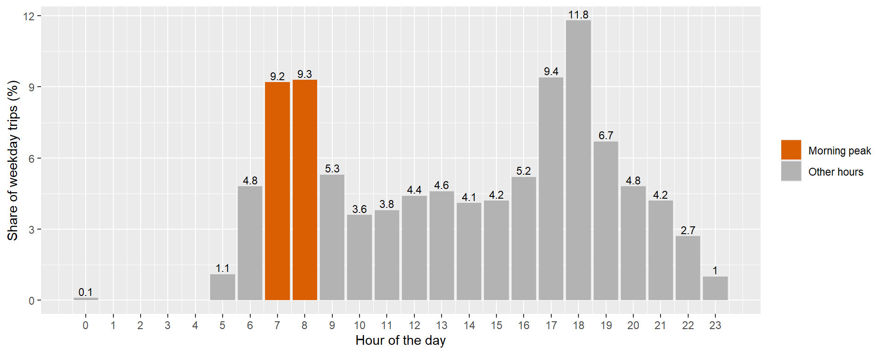

pacman::p_load(tidyverse, sf, tmap, igraph, MCI)Take-home Exercise 3: Geospatial Analytics for Urban Sustainability
Modelling Station Ridership and Market Area Impact of the Jurong Region and Cross Island Lines
1 Introduction
1.1 Study Context
Urban rail transit supports sustainable urban development by providing high-capacity mobility and encouraging transit-oriented development around stations. It also connects residents to jobs, services and education. In Singapore, the Mass Rapid Transit (MRT) system has been the backbone of public transport since 1987. It carried an average of 3.49 million rides a day in 2025 (Land Transport Authority, n.d.). The Land Transport Master Plan 2040 sets a rail network of 360 km and a target of eight in ten households within a 10-minute walk of a train station, both by 2030 (Land Transport Authority, 2019).
Stations are sometimes built ahead of demand to limit future construction disruption. Some then open years after their station boxes are completed. Hume station is one example: its box was built as part of the second phase of the Downtown Line, and it opened on 28 February 2025 (Land Transport Authority, 2025). Catchment-area analysis and station-level ridership prediction support such decisions.
Two further lines are being delivered. The Jurong Region Line (JRL) has 24 stations, and Phase 1 of the Cross Island Line (CRL) has 12 stations. JRL Stage 1 is expected around mid-2028 instead of end-2027, and the dates for Stages 2 and 3 are yet to be announced. CRL Phase 1 is targeted to open in 2030 (Land Transport Authority, 2026). The analysis treats all 36 stations as operating at the same time, and opening dates are not modelled.
1.2 Purpose and Objectives
Ridership at a station depends on the people who live within reach, the activities that the area offers, and the competing stations nearby. The planned JRL and CRL Phase 1 stations change this competitive position for existing stations. Some of the 36 stations are new, while the others are existing interchange stations that gain a new line.
Whether a new station draws riders from existing stations is a question of market areas. Probabilistic spatial interaction models address this question by dividing the trips of each origin among the available stations. The share going to a station depends on its attractiveness and its distance from the origin. The Huff model combines attractiveness with distance decay, and the Multiplicative Competitive Interaction (MCI) model estimates weights for several attractiveness variables from observed flows.
This exercise calibrates these models on observed MRT and LRT ridership and applies the calibrated model to the proposed stations. The objectives are:
- To calibrate a probabilistic spatial interaction model for station-level ridership estimation.
- To predict the potential ridership of MRT stations along the proposed JRL and CRL.
- To evaluate the potential impact of the newly planned MRT stations on the ridership patterns of the existing stations.
1.3 Research Questions
- Which attraction variables, and which distance decay, explain station-level ridership on the existing network?
- Does the calibrated model outperform reference models, namely equal market shares and a Huff model with fixed parameters?
- What ridership is predicted for each proposed station, and how does it compare with existing stations on the same lines?
- Which existing stations lose market share and ridership to the new stations, and where are the losses concentrated?
2 Data and Study Design
2.1 Data Sources
The analysis uses the datasets in the table below. All datasets were retrieved in November 2026.
| Data | Format | Description | Source |
|---|---|---|---|
| Passenger Volume by Origin Destination Train Stations | CSV | Monthly trips between pairs of train stations, by day type and hour, for July to September 2026. | LTA DataMall |
| Train Station (RapidTransitSystemStation) | Shapefile | Polygons of existing rail stations, September 2026. | LTA DataMall |
| Master Plan 2025 Rail Station Layer | GeoJSON | Polygons of planned stations, with name, rail type and ground level. | URA, via data.gov.sg |
| future_stations | CSV | Station codes, names and coordinates of planned stations. | GitHub: singapore_train_station_coordinates |
| operational_and_future_stations | CSV | Station codes, names and coordinates of operational and planned stations. | GitHub: singapore_train_station_coordinates |
| HDB Existing Building | GeoJSON | Footprints of HDB blocks, with block number, street code and postal code. | HDB, via data.gov.sg |
| Bus Stop Location | Shapefile | Locations of bus stops, September 2026. | LTA DataMall |
| Points of Interest | Shapefile | Points and polygons of points of interest. Stored as the layers gis_osm_pois_free_1 (points) and gis_osm_pois_a_free_1 (polygons). |
OpenStreetMap, via Geofabrik (Malaysia, Singapore and Brunei extract) |
2.2 Study Scope
The study covers the existing MRT and LRT network and the proposed stations of the JRL and CRL Phase 1. The proposed stations are identified by code in future_stations. The JRL stations are JE1 to JE7, JS1 to JS12 and JW1 to JW5 (Land Transport Authority). The CRL Phase 1 stations are CR2 to CR13 (Land Transport Authority).
Each station in scope is either new or an existing interchange. A new station has no ridership in the origin-destination data. An existing interchange is already in the network under its current line code and gains a new line.
Other entries in future_stations are out of scope. These include JS2A, which is targeted to open in the mid-2030s (Land Transport Authority, 2026), as well as CRL stations outside Phase 1 and stations on other lines.
2.3 Study Window
The study window is the weekday morning peak, from 07:00 to 08:59. This corresponds to hours 7 and 8 of TIME_PER_HOUR on days where DAY_TYPE is WEEKDAY. Observed ridership in this window is the quantity that the model calibrates and predicts.
The weekday morning peak is assumed to consist mainly of trips from homes to workplaces and schools. This matches the model, which describes origins by the residential population around a station and destinations by the activities around a station. In the evening and at weekends, trips are assumed to serve a wider mix of purposes, such as shopping and leisure. The link between residential origins and activity destinations is then less clear.
The window covers July, August and September 2026. These are the most recent months available, because October 2026 was not yet published at the time of retrieval. The origin-destination data are supplied as one file for each month, and the way the three months are combined is described in the Data Preparation section.
3 The Setup
3.1 Installing and Loading the R Packages
The following R packages are used:
| Package | Purpose | Use Case in This Exercise |
|---|---|---|
| tidyverse | Collection of packages for data import, manipulation and visualisation | Importing the origin-destination data, wrangling it into the interaction data frames, and producing charts |
| sf | Imports, manages and processes vector-based geospatial data | Importing the station, building and point-of-interest data, transforming coordinate reference systems, and building station catchments |
| tmap | Thematic map creation using a layered grammar of graphics | Mapping ridership, market areas and the impact of the new stations |
| igraph | Builds and analyses networks as graphs | Building the rail network and computing distances along it |
| MCI | Calibrates the Huff and Multiplicative Competitive Interaction models | Estimating the model parameters and the market shares of the stations |
The packages are loaded with the following code chunk:
3.2 Reproducibility
A fixed seed value of 123 is set for reproducibility of any simulation-based procedure used later in this exercise.
set.seed(123)4 Data Preparation and Quality Assessment
4.1 Origin-Destination Data
4.1.1 Importing the Monthly Data
The monthly origin-destination data for July, August and September 2026 are imported with read_csv() of the readr package.
od_202607 <- read_csv("data/aspatial/202607/origin_destination_train_202607.csv")
od_202608 <- read_csv("data/aspatial/202608/origin_destination_train_202608.csv")
od_202609 <- read_csv("data/aspatial/202609/origin_destination_train_202609.csv")The three months are combined into one data frame, and its structure is inspected:
od_raw <- bind_rows(od_202607, od_202608, od_202609)
glimpse(od_raw)Rows: 2,702,429
Columns: 7
$ YEAR_MONTH <chr> "2026-07", "2026-07", "2026-07", "2026-07", "2026-…
$ DAY_TYPE <chr> "WEEKENDS/HOLIDAY", "WEEKENDS/HOLIDAY", "WEEKDAY",…
$ TIME_PER_HOUR <dbl> 8, 14, 20, 19, 17, 11, 7, 9, 16, 5, 15, 16, 20, 17…
$ PT_TYPE <chr> "TRAIN", "TRAIN", "TRAIN", "TRAIN", "TRAIN", "TRAI…
$ ORIGIN_PT_CODE <chr> "EW33", "CE1/DT16", "NE4/DT19", "EW30", "DT30", "D…
$ DESTINATION_PT_CODE <chr> "TE18", "NS23", "SW4", "NS12", "SW4", "NE18", "DT3…
$ TOTAL_TRIPS <dbl> 3, 141, 159, 4, 5, 29, 426, 25, 7, 12, 107, 124, 4…The number of records and trips in each month is summarised:
od_raw %>%
group_by(YEAR_MONTH) %>%
summarise(rows = n(), trips = sum(TOTAL_TRIPS))# A tibble: 3 × 3
YEAR_MONTH rows trips
<chr> <int> <dbl>
1 2026-07 907966 91034142
2 2026-08 906985 90161381
3 2026-09 887478 85880422Missing values are checked across every column:
colSums(is.na(od_raw)) YEAR_MONTH DAY_TYPE TIME_PER_HOUR PT_TYPE
0 0 0 0
ORIGIN_PT_CODE DESTINATION_PT_CODE TOTAL_TRIPS
0 0 0 Exact duplicate rows are checked next:
sum(duplicated(od_raw))[1] 0
NoteAnalysis
- The three months hold 2,702,429 records and 267,075,945 trips, with seven columns.
- Every column has 0 missing values, and there are 0 duplicate rows.
4.1.2 Checking and Standardising the Station Codes
Each station is identified by a station code in the origin-destination data. Each line that serves a station gives it a station code. An interchange station carries the line code of every line that serves it (e.g. NS27/CC33/TE20). The number of distinct station codes in each month is counted first:
stations_202607 <- unique(c(od_202607$ORIGIN_PT_CODE, od_202607$DESTINATION_PT_CODE))
stations_202608 <- unique(c(od_202608$ORIGIN_PT_CODE, od_202608$DESTINATION_PT_CODE))
stations_202609 <- unique(c(od_202609$ORIGIN_PT_CODE, od_202609$DESTINATION_PT_CODE))
tibble(
month = c("2026-07", "2026-08", "2026-09"),
code_strings = c(length(stations_202607), length(stations_202608), length(stations_202609))
)# A tibble: 3 × 2
month code_strings
<chr> <int>
1 2026-07 187
2 2026-08 185
3 2026-09 185The station codes that differ between months are listed:
setdiff(stations_202607, stations_202608)[1] "CE1/DT16" "NS27/CE2/TE20"setdiff(stations_202607, stations_202609)[1] "CE1/DT16" "NS27/CE2/TE20"
NoteAnalysis
Both CE1/DT16 and NS27/CE2/TE20 appear in July but not in August or September.
A station recorded under more than one station code would have its trips split between two rows. Station names are used to find such stations. The station coordinates file lists one row for each line code, together with the station name:
stations_ref <- read_csv("data/aspatial/operational_and_future_stations.csv")
glimpse(stations_ref)Rows: 278
Columns: 6
$ station_code <chr> "BP1", "BP2", "BP3", "BP4", "BP5", "BP6", "BP7", "BP8", "…
$ station_name <chr> "Choa Chu Kang", "South View", "Keat Hong", "Teck Whye", …
$ lat <dbl> 1.385125, 1.380298, 1.378612, 1.376659, 1.378625, 1.37848…
$ lon <dbl> 103.7443, 103.7453, 103.7491, 103.7537, 103.7580, 103.762…
$ source <chr> "ura", "ura", "ura", "ura", "ura", "ura", "ura", "ura", "…
$ comment <chr> NA, NA, NA, NA, NA, NA, NA, NA, NA, NA, NA, NA, NA, NA, N…Each station code is split into its line codes. The line codes are matched to the station names, and the names that appear under more than one station code are listed:
od_labels <- tibble(station_label = unique(c(od_raw$ORIGIN_PT_CODE,
od_raw$DESTINATION_PT_CODE)))
od_labels %>%
mutate(station_code = station_label) %>%
separate_rows(station_code, sep = "/") %>%
left_join(stations_ref, by = "station_code") %>%
group_by(station_name) %>%
summarise(labels = n_distinct(station_label),
station_labels = paste(unique(station_label), collapse = "; ")) %>%
filter(labels > 1)# A tibble: 4 × 3
station_name labels station_labels
<chr> <int> <chr>
1 Bayfront 2 CE1/DT16; CC34/DT16
2 Marina Bay 2 NS27/CE2/TE20; NS27/CC33/TE20
3 Stevens 2 DT10; TE11
4 <NA> 2 CC34/DT16; NS27/CC33/TE20
NoteAnalysis
- Three stations appear under two different codes each: Bayfront, Marina Bay and Stevens.
- Bayfront and Marina Bay are interchange stations. Their two codes differ only in the Circle Line part.
- The two codes of Stevens,
DT10andTE11, have no part in common. - The row without a station name holds
CC34/DT16andNS27/CC33/TE20. The station file has no entry forCC34orCC33. These two codes are matched to Bayfront and Marina Bay through their other parts,DT16,NS27andTE20.
4.1.2.1 Bayfront and Marina Bay
The Circle Line codes of Bayfront and Marina Bay changed when Circle Line Stage 6 opened on 12 July 2026 (Land Transport Guru). The presence of the new codes in each month is checked:
new_codes <- c("CC34/DT16", "NS27/CC33/TE20")
new_codes %in% stations_202607[1] TRUE TRUEnew_codes %in% stations_202608[1] TRUE TRUEnew_codes %in% stations_202609[1] TRUE TRUE
NoteAnalysis
- Bayfront and Marina Bay each have an old and a new code string. The two differ only in the Circle Line code.
- The new strings appear in all three months. The old strings appear only in July. July therefore holds both the old and the new string for each of the two stations. This explains why July has 187 code strings, against 185 in August and September.
- The change took effect on 12 July, so the July file contains records under both versions.
- Each old string is recoded to its new string. Every station then has one code in all three months.
4.1.2.2 Stevens
Stevens is a single interchange station served by the Downtown Line (DT10) and the Thomson-East Coast Line (TE11) (Land Transport Guru). The origin-destination data list the two as separate codes.. The trips recorded between them are counted.
od_raw %>%
filter((ORIGIN_PT_CODE == "DT10" & DESTINATION_PT_CODE == "TE11") |
(ORIGIN_PT_CODE == "TE11" & DESTINATION_PT_CODE == "DT10")) %>%
summarise(rows = n(), trips = sum(TOTAL_TRIPS))# A tibble: 1 × 2
rows trips
<int> <dbl>
1 202 1032
NoteAnalysis
- The two codes of Stevens record 202 rows and 1,032 trips between each other.
- These rows are trips between two codes of the same station. They carry no information about movement between stations.
4.1.2.3 Applying the Recodes
The new codes for Bayfront and Marina Bay are applied, and the two codes of Stevens are combined into DT10/TE11.
od_harmonised <- od_raw %>%
mutate(
ORIGIN_PT_CODE = recode(ORIGIN_PT_CODE,
"CE1/DT16" = "CC34/DT16",
"NS27/CE2/TE20" = "NS27/CC33/TE20",
"DT10" = "DT10/TE11",
"TE11" = "DT10/TE11"),
DESTINATION_PT_CODE = recode(DESTINATION_PT_CODE,
"CE1/DT16" = "CC34/DT16",
"NS27/CE2/TE20" = "NS27/CC33/TE20",
"DT10" = "DT10/TE11",
"TE11" = "DT10/TE11")
)
n_distinct(c(od_harmonised$ORIGIN_PT_CODE, od_harmonised$DESTINATION_PT_CODE))[1] 184
NoteAnalysis
- After the recodes, the data hold 184 distinct codes. This is 187 less the two old codes and one merged pair:
DT10andTE11becomeDT10/TE11.
After the merge, the trips between DT10 and TE11 start and end at the same station. These records are removed:
od_harmonised %>%
filter(ORIGIN_PT_CODE == DESTINATION_PT_CODE) %>%
summarise(rows = n(), trips = sum(TOTAL_TRIPS))# A tibble: 1 × 2
rows trips
<int> <dbl>
1 202 1032od_harmonised <- od_harmonised %>%
filter(ORIGIN_PT_CODE != DESTINATION_PT_CODE)
od_harmonised %>%
summarise(rows = n(), trips = sum(TOTAL_TRIPS))# A tibble: 1 × 2
rows trips
<int> <dbl>
1 2702227 267074913
NoteAnalysis
- After the recodes, 202 rows and 1,032 trips have the same origin and destination. These are the same rows and trips counted between
DT10andTE11earlier. - Removing them leaves 2,702,227 rows and 267,074,913 trips. This is 202 rows and 1,032 trips fewer than the 2,702,429 rows and 267,075,945 trips in the raw data.
- A trip from a station to itself is not a movement between two stations. Hence, such rows cannot be used in the model and are removed.
4.2 Pooling the Months
The analysis uses the weekday morning peak, pooled over July, August and September 2026. Pooling adds the trips of the three months for each station pair. The aim is to have more trips for each pair than a single month gives. This only suits the data if the three months look alike, and the months are compared for this reason. This section counts the weekdays in each month, checks the public holiday, selects the morning peak, compares the months and pools them.
4.2.1 Counting the Weekdays
A calendar of the three months is built, and the days of the week are counted in each month:
calendar <- tibble(date = seq(ymd("2026-07-01"), ymd("2026-09-30"), by = "day"))
calendar <- calendar %>%
mutate(YEAR_MONTH = format(date, "%Y-%m"),
day = wday(date, label = TRUE))
calendar %>%
group_by(YEAR_MONTH) %>%
summarise(days = n(),
weekdays = sum(!day %in% c("Sat", "Sun")),
weekend_days = sum(day %in% c("Sat", "Sun")))# A tibble: 3 × 4
YEAR_MONTH days weekdays weekend_days
<chr> <int> <int> <int>
1 2026-07 31 23 8
2 2026-08 31 21 10
3 2026-09 30 22 8
NoteAnalysis
- July has 23 weekdays and 8 weekend days.
- August has 21 weekdays and 10 weekend days.
- September has 22 weekdays and 8 weekend days.
4.2.2 Checking the Public Holiday
National Day falls on 9 August. In 2026, this date is a Sunday, and the following Monday is observed as a public holiday (Ministry of Manpower, 2025). The two dates are checked in the calendar:
calendar %>%
filter(date %in% ymd(c("2026-08-09", "2026-08-10")))# A tibble: 2 × 3
date YEAR_MONTH day
<date> <chr> <ord>
1 2026-08-09 2026-08 Sun
2 2026-08-10 2026-08 Mon The origin-destination data label every day as either WEEKDAY or WEEKENDS/HOLIDAY. The trips labelled WEEKENDS/HOLIDAY are added up for each month. They are divided by the number of days in each month that carry this label. This is done twice: first counting only the Saturdays and Sundays, and then also counting 10 August as a day labelled WEEKENDS/HOLIDAY.
holiday_days <- tibble(YEAR_MONTH = c("2026-07",
"2026-08",
"2026-09"),
holidays = c(0, 1, 0))
od_raw %>%
filter(DAY_TYPE == "WEEKENDS/HOLIDAY") %>%
group_by(YEAR_MONTH) %>%
summarise(trips = sum(TOTAL_TRIPS)) %>%
left_join(holiday_days, by = "YEAR_MONTH") %>%
mutate(weekend_days = c(8, 10, 8),
per_day_without_holiday = round(trips / weekend_days),
per_day_with_holiday = round(trips / (weekend_days + holidays))) %>%
select(YEAR_MONTH, trips, per_day_without_holiday, per_day_with_holiday)# A tibble: 3 × 4
YEAR_MONTH trips per_day_without_holiday per_day_with_holiday
<chr> <dbl> <dbl> <dbl>
1 2026-07 19739633 2467454 2467454
2 2026-08 27315022 2731502 2483184
3 2026-09 19095879 2386985 2386985
NoteAnalysis
- 9 August 2026 is a Sunday, and 10 August is a Monday.
- Without the public holiday, August has 2,731,502 weekend and holiday trips per day. This is higher than July (2,467,454) and September (2,386,985).
- With 10 August counted as a public holiday, August falls to 2,483,184 trips per day. This is in line with the other two months.
- Hence, 10 August is treated as a public holiday, and August is taken to have 20 weekdays, not 21.
The weekdays of each month are counted. 10 August is left out, because it is treated as a public holiday and its trips are not in the WEEKDAY rows.
weekday_counts <- calendar %>%
filter(!day %in% c("Sat", "Sun"), date != ymd("2026-08-10")) %>%
group_by(YEAR_MONTH) %>%
summarise(weekdays = n())
weekday_counts# A tibble: 3 × 2
YEAR_MONTH weekdays
<chr> <int>
1 2026-07 23
2 2026-08 20
3 2026-09 224.2.3 Selecting the Morning Peak
This study analyses the morning peak period, when most trips are assumed to run from homes to workplaces and schools.
Each row of the origin-destination data holds the trips made in one hour of the day. TIME_PER_HOUR is assumed to be the hour in which a trip starts. The weekday trips in each hour are summarised to find the busiest hours of the morning.
od_hourly <- od_harmonised %>%
filter(DAY_TYPE == "WEEKDAY") %>%
group_by(TIME_PER_HOUR) %>%
summarise(trips = sum(TOTAL_TRIPS)) %>%
mutate(share = round(100 * trips / sum(trips), 1),
peak = ifelse(TIME_PER_HOUR %in% c(7, 8), "Morning peak", "Other hours"))
ggplot(od_hourly, aes(x = TIME_PER_HOUR, y = share, fill = peak)) +
geom_col() +
geom_text(aes(label = share), vjust = -0.3, size = 3) +
scale_fill_manual(values = c("Morning peak" = "#d95f02", "Other hours" = "grey70")) +
scale_x_continuous(breaks = 0:23) +
labs(x = "Hour of the day", y = "Share of weekday trips (%)", fill = NULL)
NoteAnalysis
- No trips are recorded in hours 1 to 4.
- Hours 7 and 8 carry 9.2% and 9.3% of weekday trips. They are the two busiest hours of the morning.
- The morning peak is therefore taken as hours 7 and 8.
The weekday trips in hours 7 and 8 are selected, and the trips in each month are summarised:
od_am <- od_harmonised %>%
filter(DAY_TYPE == "WEEKDAY", TIME_PER_HOUR %in% c(7, 8))
od_am %>%
group_by(YEAR_MONTH) %>%
summarise(trips = sum(TOTAL_TRIPS))# A tibble: 3 × 2
YEAR_MONTH trips
<chr> <dbl>
1 2026-07 13208730
2 2026-08 11611974
3 2026-09 122938324.2.4 Comparing the Months
Trips are added up for each station pair in each month. This also combines rows that became identical after the recodes, such as July rows for the old and new codes of Bayfront. The number of pairs with fewer than 10 trips is counted for each month.
od_pairs <- od_am %>%
group_by(YEAR_MONTH, ORIGIN_PT_CODE, DESTINATION_PT_CODE) %>%
summarise(trips = sum(TOTAL_TRIPS), .groups = "drop")
od_pairs %>%
group_by(YEAR_MONTH) %>%
summarise(pairs = n(),
under_10 = sum(trips < 10),
share = round(100 * under_10 / pairs, 1))# A tibble: 3 × 4
YEAR_MONTH pairs under_10 share
<chr> <int> <int> <dbl>
1 2026-07 27384 5964 21.8
2 2026-08 27090 5875 21.7
3 2026-09 27297 5927 21.7The same count is made after the three months are added together:
od_pooled <- od_pairs %>%
group_by(ORIGIN_PT_CODE, DESTINATION_PT_CODE) %>%
summarise(trips = sum(trips), .groups = "drop")
od_pooled %>%
summarise(pairs = n(),
under_10 = sum(trips < 10),
share = round(100 * under_10 / pairs, 1))# A tibble: 1 × 3
pairs under_10 share
<int> <int> <dbl>
1 29287 4987 17The months have different numbers of weekdays. Trips per weekday are compared between months, across all station pairs.
od_wide <- od_pairs %>%
left_join(weekday_counts, by = "YEAR_MONTH") %>%
mutate(trips_per_weekday = trips / weekdays) %>%
select(-trips, -weekdays) %>%
pivot_wider(names_from = YEAR_MONTH, values_from = trips_per_weekday, values_fill = 0)
round(cor(od_wide[, 3:5]), 3) 2026-07 2026-08 2026-09
2026-07 1.000 0.998 0.994
2026-08 0.998 1.000 0.996
2026-09 0.994 0.996 1.000
NoteAnalysis
- Each month has between 27,090 and 27,384 station pairs with morning peak trips. Between 21.7% and 21.8% of these pairs have fewer than 10 trips.
- The three months together have 29,287 pairs. Of these, 4,987 pairs (17%) have fewer than 10 trips.
- The pooled data hold more pairs than any single month, and a lower share of pairs with few trips. Pairs with few trips remain.
- The correlation of trips per weekday across station pairs is 0.998 between July and August, 0.994 between July and September, and 0.996 between August and September. The three months show very similar patterns. Pooling therefore adds trips without mixing different patterns.
4.2.5 Averaging per Weekday
The pooled trips are divided by the total number of weekdays in the three months:
od_pooled <- od_pooled %>%
mutate(trips_per_weekday = trips / sum(weekday_counts$weekdays))
od_pooled %>%
summarise(pairs = n(),
trips = sum(trips),
trips_per_weekday = round(sum(trips_per_weekday)))# A tibble: 1 × 3
pairs trips trips_per_weekday
<int> <dbl> <dbl>
1 29287 37114536 570993
NoteAnalysis
- The pooled data hold 29,287 station pairs and 37,114,536 trips. This equals the sum of the three monthly totals.
- Divided by the 65 weekdays of the three months, the average is 570,993 trips per weekday.
4.2.6 Stability of Station Ridership
A pooled average describes a station poorly if its ridership changes strongly between months. The morning peak trips arriving at each station per weekday are compared between July and September. A ratio of 1 means no change. The ratio is summarised first:
od_destination <- od_pairs %>%
group_by(YEAR_MONTH, DESTINATION_PT_CODE) %>%
summarise(trips = sum(trips), .groups = "drop") %>%
left_join(weekday_counts, by = "YEAR_MONTH") %>%
mutate(trips_per_weekday = trips / weekdays) %>%
select(-trips, -weekdays) %>%
pivot_wider(names_from = YEAR_MONTH, values_from = trips_per_weekday, values_fill = 0) %>%
mutate(ratio = `2026-09` / `2026-07`)
summary(od_destination$ratio) Min. 1st Qu. Median Mean 3rd Qu. Max.
0.3222 0.9233 0.9776 0.9758 1.0050 2.0666 The stations with a ratio below 0.8 or above 1.25 are listed with their names:
od_destination %>%
filter(ratio < 0.8 | ratio > 1.25) %>%
left_join(stations_ref %>% select(station_code, station_name),
by = c("DESTINATION_PT_CODE" = "station_code")) %>%
mutate(`2026-07` = round(`2026-07`, 1),
`2026-08` = round(`2026-08`, 1),
`2026-09` = round(`2026-09`, 1),
ratio = round(ratio, 2)) %>%
select(DESTINATION_PT_CODE, station_name, `2026-07`, `2026-08`, `2026-09`, ratio) %>%
arrange(ratio) %>%
print(n = 20)# A tibble: 16 × 6
DESTINATION_PT_CODE station_name `2026-07` `2026-08` `2026-09` ratio
<chr> <chr> <dbl> <dbl> <dbl> <dbl>
1 EW22 Dover 5538 3931. 1784. 0.32
2 BP4 Teck Whye 1209. 1550. 532. 0.44
3 TE1 Woodlands North 3966 2808 2035 0.51
4 NS15 Yio Chu Kang 8226. 7558. 5401. 0.66
5 DT8 Tan Kah Kee 1979. 1981. 1382. 0.7
6 PE5 Kadaloor 472. 476. 365. 0.77
7 TE24 Katong Park 492. 499. 384. 0.78
8 DT6 King Albert Park 1731. 1604. 1362. 0.79
9 TE27 Marine Terrace 797. 816. 637. 0.8
10 DT13 Rochor 1613. 1969. 2096. 1.3
11 CC2 Bras Basah 1254. 1463. 1679. 1.34
12 CC31 Cantonment 148. 225. 204. 1.37
13 NE18 Punggol Coast 2790. 2788. 4440. 1.59
14 DT4 Hume 101. 141. 164 1.62
15 CC30 Keppel 12.5 21.4 21.7 1.74
16 CC32 Prince Edward Road 329. 604 679 2.07
NoteAnalysis
- Most stations are stable. The median ratio is 0.98, and the middle half of the stations lie between 0.923 and 1.005.
- 16 stations fall outside the range of 0.8 to 1.25. Nine have a ratio below 0.8, and seven have a ratio above 1.25. TE27 is shown as 0.8 because the ratio is rounded.
- Keppel (
CC30), Cantonment (CC31) and Prince Edward Road (CC32) opened on 12 July 2026 (Land Transport Authority, 2026). July therefore includes weekdays before they opened. Their ratios are 1.74, 1.37 and 2.07 respectively. - Hume (
DT4) opened on 28 February 2025 (Land Transport Authority, 2025). Its ridership is still small (101 to 164 trips per weekday) and rises each month. - The falls at Dover (0.32), Teck Whye (0.44), Woodlands North (0.51) and Yio Chu Kang (0.66) are the largest. The rise at Punggol Coast (1.59) is the largest among the stations that were already open. The data do not show the causes of these changes.
- These 16 stations stay in the pooled data and are flagged. In the Model Calibration section, the model is fitted twice, with and without them, to check whether they affect the result.
4.3 Existing Stations
4.3.1 Importing the Train Station Layer
The train station layer holds the outline of each station as a polygon. It is imported with st_read() of the sf package.
ts_raw <- st_read(dsn = "data/geospatial/TrainStation_Sep2026",
layer = "RapidTransitSystemStation")Reading layer `RapidTransitSystemStation' from data source
`C:\yxlinn\ISSS626-GAA\Take-home_Ex\Take-home_Ex03\data\geospatial\TrainStation_Sep2026'
using driver `ESRI Shapefile'
Simple feature collection with 234 features and 15 fields
Geometry type: MULTIPOLYGON
Dimension: XY
Bounding box: xmin: 6068.209 ymin: 27478.44 xmax: 45377.5 ymax: 47913.58
Projected CRS: SVY21glimpse(ts_raw)Rows: 234
Columns: 16
$ JOB_NUM <chr> "GDMDM20190314-025", "GDMDM20190314-025", "GDMDM20190314-02…
$ TYP_CD <int> 33, 34, 33, 34, 33, 33, 34, 34, 34, 34, 34, 33, 33, 34, 34,…
$ STN_NAM <chr> "PE3", "EW5", "PTC", "DT33", "PW7", "BP10", "CC24", "TE23",…
$ EXCEPTION_ <chr> NA, NA, NA, NA, NA, NA, NA, NA, NA, NA, NA, NA, NA, NA, NA,…
$ LAST_UPD_U <chr> "SAID", "SAID", "SAID", "RATINAR", "RATINAR", "SAID", "SAID…
$ LAST_UPD_D <date> 2019-03-14, 2019-03-14, 2019-03-14, 2017-07-13, 2009-04-30…
$ CRT_USRID_ <chr> "RATINAR", "system", "RATINAR", "RATINAR", "RATINAR", "syst…
$ CRT_DTTM <date> 2005-06-24, 2004-10-27, 2005-06-24, 2017-07-13, 2005-06-24…
$ RTS_LVL_NU <int> 3, 3, 3, 1, 3, 3, 1, 1, 1, 1, 3, 3, 3, 3, 3, 2, 1, 1, 3, 3,…
$ LIN_NAM <chr> "PLRT", "EWL", "PLRT", "DTL", "PLRT", "BPLRT", "CCL", "TEC"…
$ PKG_REF <chr> NA, NA, NA, NA, NA, NA, NA, NA, NA, NA, NA, NA, NA, NA, NA,…
$ REMARKS <chr> NA, NA, NA, NA, NA, NA, NA, NA, NA, NA, NA, NA, NA, NA, NA,…
$ ATTACHEMEN <chr> NA, NA, NA, NA, NA, NA, "CC24_KRG STN.zip", NA, "CC20_FRR S…
$ SHAPE_AREA <dbl> 1054.6116, 4710.6458, 11506.5035, 10262.5232, 1050.0883, 76…
$ SHAPE_LEN <dbl> 170.5610, 384.7860, 648.1159, 990.5214, 170.4578, 129.9227,…
$ geometry <MULTIPOLYGON [m]> MULTIPOLYGON (((36786.93 41..., MULTIPOLYGON (…The coordinate reference system of the layer is checked:
st_crs(ts_raw)$input[1] "SVY21"The layer is transformed to the Singapore projection, EPSG:3414.
ts <- st_transform(ts_raw, crs = 3414)
NoteAnalysis
- The layer holds 234 polygons and 15 attribute columns.
- The coordinate reference system is labelled
SVY21and has no EPSG code. The layer is transformed to EPSG:3414, so that all layers use the same code.
4.3.2 Checking the Layer
The columns holding the station code, the type and the line are checked for missing values, and the geometries are checked for validity.
colSums(is.na(st_drop_geometry(ts_raw[, c("STN_NAM", "TYP_CD", "LIN_NAM")])))STN_NAM TYP_CD LIN_NAM
0 0 0 sum(!st_is_valid(ts))[1] 0A station can be drawn as more than one polygon. The codes that appear on more than one polygon are listed below.
ts %>%
st_drop_geometry() %>%
count(STN_NAM) %>%
filter(n > 1) STN_NAM n
1 CC17 2
2 CC29 2
3 CE2 3
4 DT10 2
5 EW16 2
6 NS22 2
7 TE26 2
8 TE29 2
NoteAnalysis
STN_NAM,TYP_CDandLIN_NAMhave no missing values, and all geometries are valid.- Eight codes appear on more than one polygon:
CE2on three and the other seven on two each. A station can therefore be drawn as several polygons.
4.3.3 Matching the Layer to the Station Codes
The layer labels each polygon with one or more codes. The polygons whose label holds more than one code are listed.
ts %>%
st_drop_geometry() %>%
filter(grepl("/", STN_NAM)) %>%
select(STN_NAM, LIN_NAM) STN_NAM LIN_NAM
1 DT16 / CE1 DTCC
2 EW14 / NS26 EWNS
3 EW13 / NS25 EWNS
4 EW24 / NS1 EWNSThe codes of the origin-destination data have to be matched to these labels. Each code of the origin-destination data is split into its parts, and one part is added for the old Circle Line code of Marina Bay, which the layer still uses.
station_parts <- tibble(station_code = unique(c(od_harmonised$ORIGIN_PT_CODE,
od_harmonised$DESTINATION_PT_CODE))) %>%
mutate(part = station_code) %>%
separate_rows(part, sep = "/")
station_parts <- bind_rows(station_parts,
tibble(station_code = "NS27/CC33/TE20", part = "CE2"))
nrow(distinct(station_parts, station_code))[1] 184Each polygon label is split in the same way:
ts_parts <- ts %>%
st_drop_geometry() %>%
mutate(poly_id = row_number(), part = STN_NAM) %>%
separate_rows(part, sep = "/") %>%
mutate(part = trimws(part)) %>%
select(poly_id, STN_NAM, LIN_NAM, part)
poly_station <- ts_parts %>%
inner_join(station_parts, by = "part") %>%
distinct(poly_id, station_code)Three checks follow. The first counts the polygons that match more than one station. The second lists the stations without a polygon. The third lists the polygons without a station.
poly_station %>%
count(poly_id) %>%
filter(n > 1) %>%
nrow()[1] 0station_parts %>%
distinct(station_code) %>%
anti_join(poly_station, by = "station_code")# A tibble: 0 × 1
# ℹ 1 variable: station_code <chr>ts %>%
st_drop_geometry() %>%
mutate(poly_id = row_number()) %>%
anti_join(poly_station, by = "poly_id") %>%
select(poly_id, STN_NAM, LIN_NAM) poly_id STN_NAM LIN_NAM
1 16 SMD NEL
2 23 BPLD BPLRT
3 36 UPD EWL
4 37 MD TEC
5 40 TE22A TEC
6 59 TD TWE
7 91 SLD SLRT
8 104 TSCDTFB CCL
9 134 TSFB DTL
10 136 TE10 TEC
11 141 KCD CCL
12 143 ST DTL
13 152 HSSCT DTL
14 184 CD EWL
15 185 BOCC DTL
16 193 GBD DTL
17 198 BD NSL
18 214 CC18 CCL
19 233 TE21 TEC
NoteAnalysis
- All 184 stations match at least one polygon, and no polygon matches more than one station.
- 19 polygons match no station. None of their codes appears among the 184 codes of the origin-destination data.
- Four of the 19,
TE22A,TE10,CC18andTE21, have the form of a station code. They have no trips in the origin-destination data. - The other 15 have codes made of letters only, such as
SMDandBPLD. They are left out.
4.3.4 Building the Station Points
Each station is represented by one point. The polygons of a station are combined, and the centre of the combined shape is taken:
stations_exist <- ts %>%
mutate(poly_id = row_number()) %>%
inner_join(poly_station, by = "poly_id") %>%
group_by(station_code) %>%
summarise(polygons = n()) %>%
st_centroid()
nrow(stations_exist)[1] 184table(stations_exist$polygons)
1 2 3 4
157 24 2 1 The station names are taken from the station coordinates file, matched on the parts of each code:
station_names <- station_parts %>%
left_join(stations_ref %>% select(station_code, station_name),
by = c("part" = "station_code")) %>%
filter(!is.na(station_name)) %>%
distinct(station_code, station_name)
stations_exist <- stations_exist %>%
left_join(station_names, by = "station_code")
sum(is.na(stations_exist$station_name))[1] 0
NoteAnalysis
- The 184 stations have 157 with one polygon, 24 with two, 2 with three and 1 with four.
- Every station has a name from the station coordinates file.
4.4 Proposed Stations
4.4.1 Importing the Planned Stations
The planned stations are stored in future_stations.csv. The file is imported with read_csv() of the readr package:
future_raw <- read_csv("data/aspatial/future_stations.csv")
glimpse(future_raw)Rows: 65
Columns: 6
$ station_code <chr> "TE30", "TE31", "DT36", "DT37", "CC30", "CC31", "CC32", "…
$ station_name <chr> "Bedok South", "Sungei Bedok", "Xilin", "Sungei Bedok", "…
$ lat <dbl> 1.316646, 1.320396, 1.328735, 1.320396, 1.270172, 1.27308…
$ lon <dbl> 103.9492, 103.9572, 103.9649, 103.9572, 103.8303, 103.836…
$ source <chr> "ura", "ura", "ura", "ura", "ura", "ura", "ura", "ura", "…
$ comment <chr> NA, NA, NA, NA, NA, NA, NA, NA, NA, "missing_from_masterp…Missing values and duplicated station codes are checked:
colSums(is.na(future_raw))station_code station_name lat lon source comment
0 0 0 0 0 63 sum(duplicated(future_raw$station_code))[1] 0
NoteAnalysis
- The file holds 65 planned stations, with a code, a name and a latitude and longitude for each.
- The columns
station_code,station_name,latandlonhave no missing values. - The
commentcolumn is empty for 63 stations. It is not used in this study. - No station code appears twice.
4.4.2 Defining the Study Scope
The study covers the 24 stations of the Jurong Region Line (JRL) and the 12 stations of Phase 1 of the Cross Island Line (CRL). Their codes are listed, and each planned station is assigned to a line.
jrl_codes <- c("JE1", "JE2", "JE3", "JE4", "JE5", "JE6", "JE7",
"JS1", "JS2", "JS3", "JS4", "JS5", "JS6", "JS7", "JS8", "JS9", "JS10", "JS11", "JS12",
"JW1", "JW2", "JW3", "JW4", "JW5")
crl_codes <- c("CR2", "CR3", "CR4", "CR5", "CR6", "CR7", "CR8", "CR9", "CR10", "CR11", "CR12", "CR13")
future_scope <- future_raw %>%
mutate(line = case_when(station_code %in% jrl_codes ~ "JRL",
station_code %in% crl_codes ~ "CRL",
TRUE ~ "Other"),
in_scope = line != "Other")
future_scope %>%
count(in_scope)# A tibble: 2 × 2
in_scope n
<lgl> <int>
1 FALSE 29
2 TRUE 36
NoteAnalysis
- 36 of the 65 planned stations are in scope: 24 on the Jurong Region Line and 12 on Phase 1 of the Cross Island Line.
- The other 29 stations belong to other planned lines or extensions, and are excluded.
Some stations of the two lines are existing stations where the new line connects. These are identified by their station names, which are also in the existing stations built earlier.
future_scope <- future_scope %>%
mutate(status = ifelse(station_name %in% stations_exist$station_name,
"Existing interchange", "New station"))
future_scope %>%
filter(in_scope) %>%
count(line, status)# A tibble: 4 × 3
line status n
<chr> <chr> <int>
1 CRL Existing interchange 4
2 CRL New station 8
3 JRL Existing interchange 3
4 JRL New station 21
NoteAnalysis
- Phase 1 of the Cross Island Line has 4 existing interchange stations and 8 new stations. The Jurong Region Line has 3 existing interchange stations and 21 new stations.
- The 7 existing interchange stations already appear in the origin-destination data under their current codes, such as
NS4/BP1for Choa Chu Kang. The planned code, such asJS1, is only a second code for the same station. - The 29 new stations are the proposed stations in this study.
The existing interchange stations are matched to their station codes in the origin-destination data.
future_scope %>%
filter(in_scope, status == "Existing interchange") %>%
select(planned_code = station_code, station_name, line) %>%
left_join(stations_exist %>% st_drop_geometry() %>% select(station_code, station_name),
by = "station_name")# A tibble: 7 × 4
planned_code station_name line station_code
<chr> <chr> <chr> <chr>
1 JS1 Choa Chu Kang JRL NS4/BP1
2 JS8 Boon Lay JRL EW27
3 JE5 Jurong East JRL EW24/NS1
4 CR5 Pasir Ris CRL EW1
5 CR8 Hougang CRL NE14
6 CR11 Ang Mo Kio CRL NS16
7 CR13 Bright Hill CRL TE7 A new station should have no trips in the origin-destination data. Each planned code of a new station, such as JE1, is therefore searched for among the parts of the existing station codes. The number of matches is counted:
future_scope %>%
filter(in_scope, status == "New station") %>%
inner_join(station_parts, by = c("station_code" = "part")) %>%
nrow()[1] 0
NoteAnalysis
- None of the 29 new station codes appears in the origin-destination data. Their ridership is therefore unobserved, and is predicted by the model.
4.4.3 Locating the Proposed Stations
The Master Plan 2025 Rail Station Layer holds the planned station footprints. It is imported with st_read():
mp_raw <- st_read(dsn = "data/geospatial/MasterPlan2025RailStationLayer.geojson")Reading layer `G_MP25_RAIL_STN' from data source
`C:\yxlinn\ISSS626-GAA\Take-home_Ex\Take-home_Ex03\data\geospatial\MasterPlan2025RailStationLayer.geojson'
using driver `GeoJSON'
Simple feature collection with 272 features and 8 fields
Geometry type: MULTIPOLYGON
Dimension: XY
Bounding box: xmin: 103.6363 ymin: 1.251433 xmax: 104.0051 ymax: 1.450545
Geodetic CRS: WGS 84glimpse(mp_raw)Rows: 272
Columns: 9
$ OBJECTID <int> 44, 45, 46, 47, 48, 49, 50, 51, 52, 53, 54, 55, 56, 57, 58,…
$ GRND_LEVEL <chr> "UNDERGROUND", "ABOVEGROUND", "ABOVEGROUND", "ABOVEGROUND",…
$ RAIL_TYPE <chr> "MRT", "MRT", "MRT", "MRT", "MRT", "MRT", "MRT", "LRT", "LR…
$ NAME <chr> "SUNGEI BEDOK", "CHOA CHU KANG WEST", "JURONG WEST", "TUKAN…
$ INC_CRC <chr> "BAE182C76FD419B5", "53CF38120DD230B4", "FD64DB40EA21CAD9",…
$ FMEL_UPD_D <chr> "20251229172113", "20251229172113", "20251229172113", "2025…
$ SHAPE.AREA <dbl> 22448.0061, 3603.4414, 3998.0487, 4098.7317, 3308.7191, 885…
$ SHAPE.LEN <dbl> 1460.5884, 363.3905, 362.8783, 366.9285, 334.1141, 585.3932…
$ geometry <MULTIPOLYGON [°]> MULTIPOLYGON (((103.9585 1...., MULTIPOLYGON (…
NoteAnalysis
- The layer holds 272 polygons, each with 8 attribute fields.
- The coordinates are in longitude and latitude (WGS 84). A transformation to EPSG:3414 is needed before distances can be measured in metres.
The coordinate reference system and the validity of the geometries are checked.
st_crs(mp_raw)$input[1] "WGS 84"sum(!st_is_valid(mp_raw))[1] 0n_distinct(mp_raw$NAME)[1] 236
NoteAnalysis
- The coordinate reference system is WGS 84.
- All 272 geometries are valid.
- The layer has 272 polygons but 236 distinct names. Some stations are therefore made up of more than one polygon.
The new stations are matched to the layer by name. Names that carry a space at the start or end cannot be matched, so the spaces are removed first. The names that differ before and after the removal are listed:
mp_raw %>%
st_drop_geometry() %>%
mutate(NAME_trimmed = str_trim(NAME)) %>%
filter(NAME != NAME_trimmed) %>%
select(NAME, NAME_trimmed) NAME NAME_trimmed
1 WOODLANDS WOODLANDS
2 TIONG BAHRU TIONG BAHRU
3 WOODLANDS NORTH WOODLANDS NORTH
4 PANDAN RESERVOIR PANDAN RESERVOIR
5 MATTAR MATTAR
6 ELIAS ELIAS
7 MARINA SOUTH PIER MARINA SOUTH PIER
8 MARYMOUNT MARYMOUNT
9 WOODLANDS WOODLANDS
NoteAnalysis
- 9 polygons carry a space at the start or end of the name, such as
PANDAN RESERVOIR. - Pandan Reservoir is a new station. Without the removal of the space, its name does not match, and only 28 of the 29 new stations are found.
The layer is transformed to EPSG:3414. The polygons with the same name are combined, and the centre of each is taken as the station point:
mp <- mp_raw %>%
mutate(NAME = str_trim(NAME)) %>%
st_transform(crs = 3414)
mp_points <- mp %>%
group_by(NAME) %>%
summarise(polygons = n()) %>%
st_centroid()The new stations are matched to these points by name:
stations_new <- mp_points %>%
inner_join(future_scope %>%
filter(in_scope, status == "New station") %>%
mutate(NAME = toupper(station_name)),
by = "NAME")
nrow(stations_new)[1] 29table(stations_new$polygons)
1
29 The station points are compared with the coordinates in future_stations.csv. The distance between the two is calculated for each station, in metres:
csv_points <- stations_new %>%
st_drop_geometry() %>%
st_as_sf(coords = c("lon", "lat"), crs = 4326) %>%
st_transform(crs = 3414)
summary(as.numeric(st_distance(stations_new, csv_points, by_element = TRUE))) Min. 1st Qu. Median Mean 3rd Qu. Max.
4.189e-06 6.911e-06 1.036e-05 2.092e-05 2.715e-05 9.046e-05
NoteAnalysis
- The largest distance is 0.00009 metres. The 29 matched polygons therefore lie at the positions given in
future_stations.csv, which confirms that each name is matched to the correct station.
4.4.4 Combining Existing and Proposed Stations
The existing stations and the proposed stations are placed in one layer.
stations_existing <- stations_exist %>%
select(station_code, station_name) %>%
mutate(status = "Existing")
stations_proposed <- stations_new %>%
select(station_code, station_name, line) %>%
mutate(status = "Proposed")
stations_all <- bind_rows(stations_existing, stations_proposed)
stations_all %>%
st_drop_geometry() %>%
count(status)# A tibble: 2 × 2
status n
<chr> <int>
1 Existing 184
2 Proposed 29